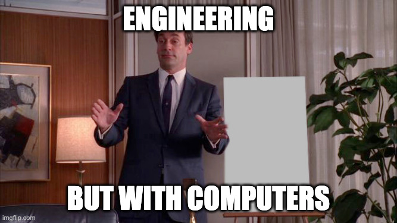
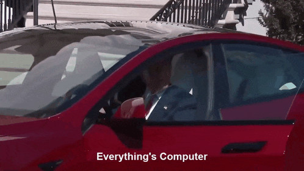
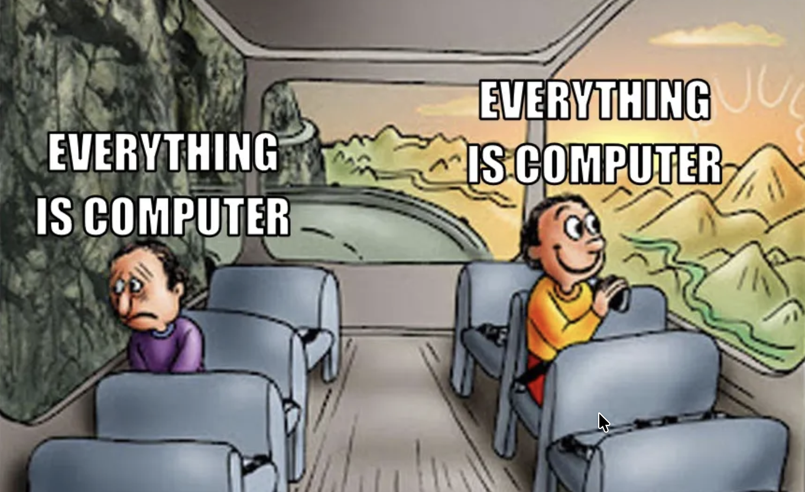
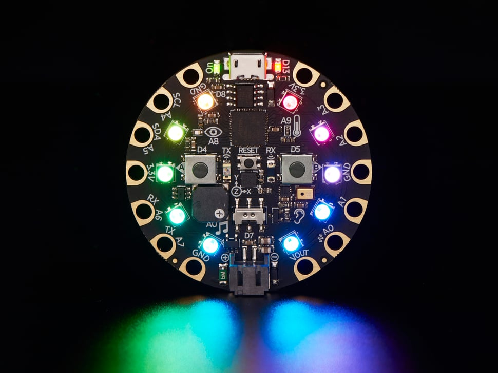
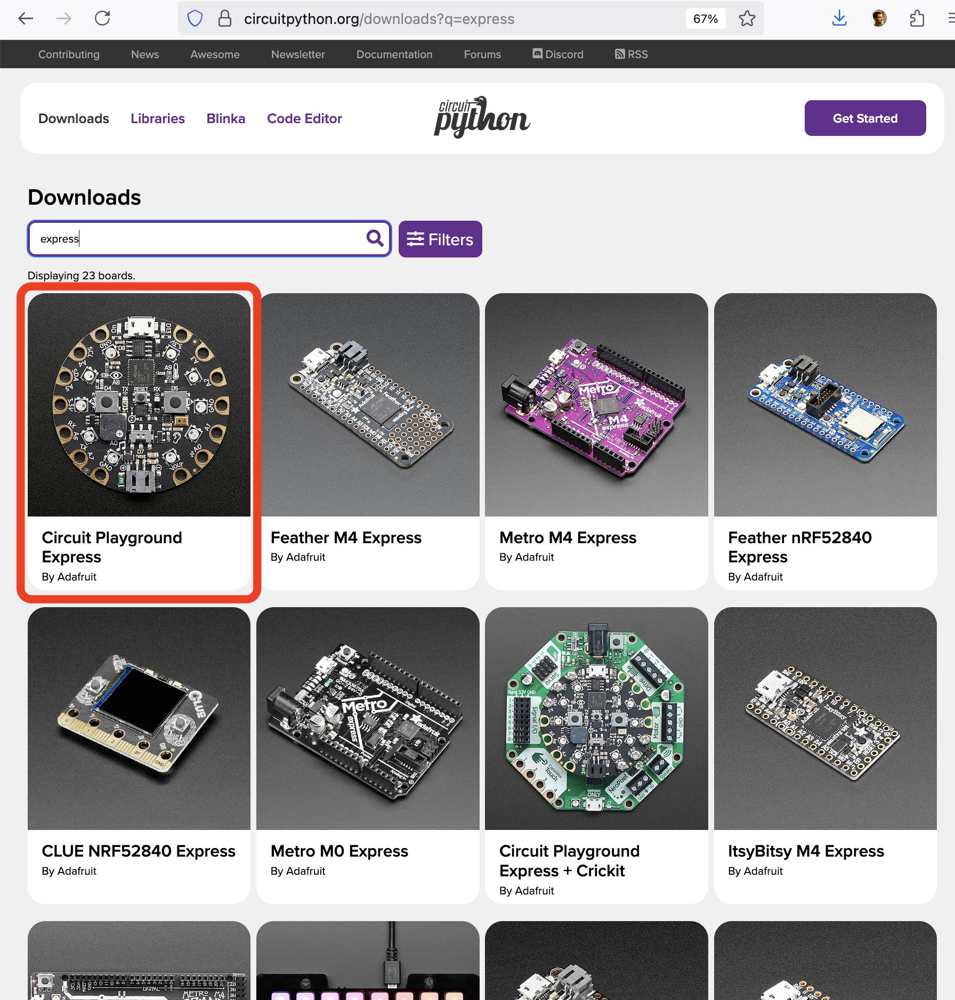
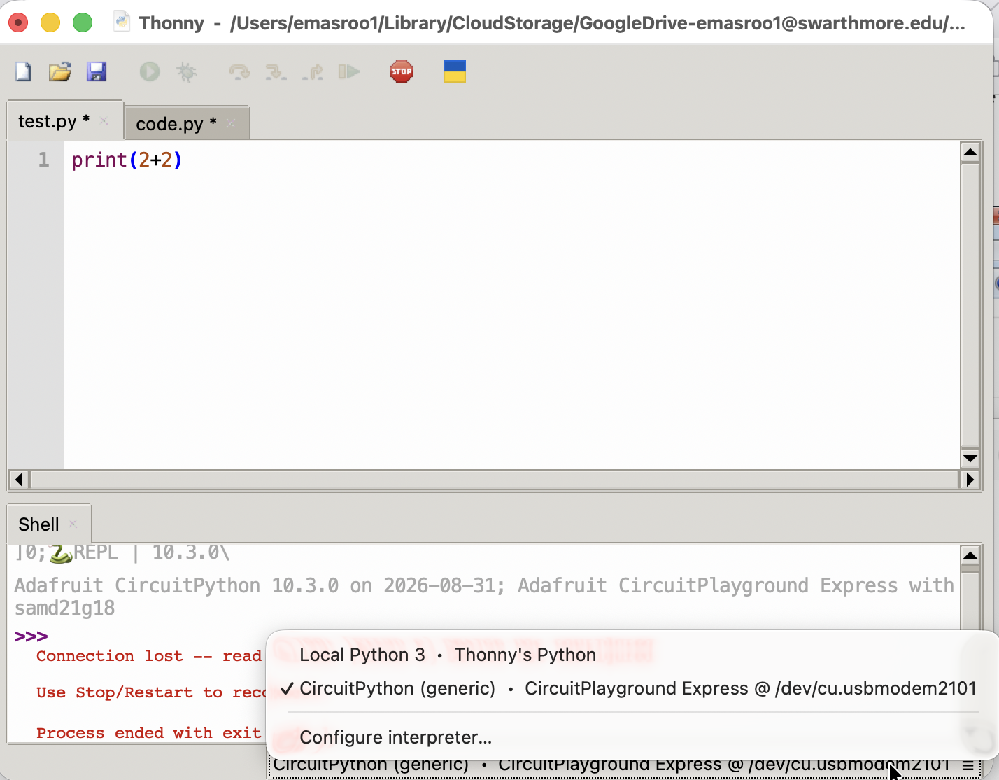
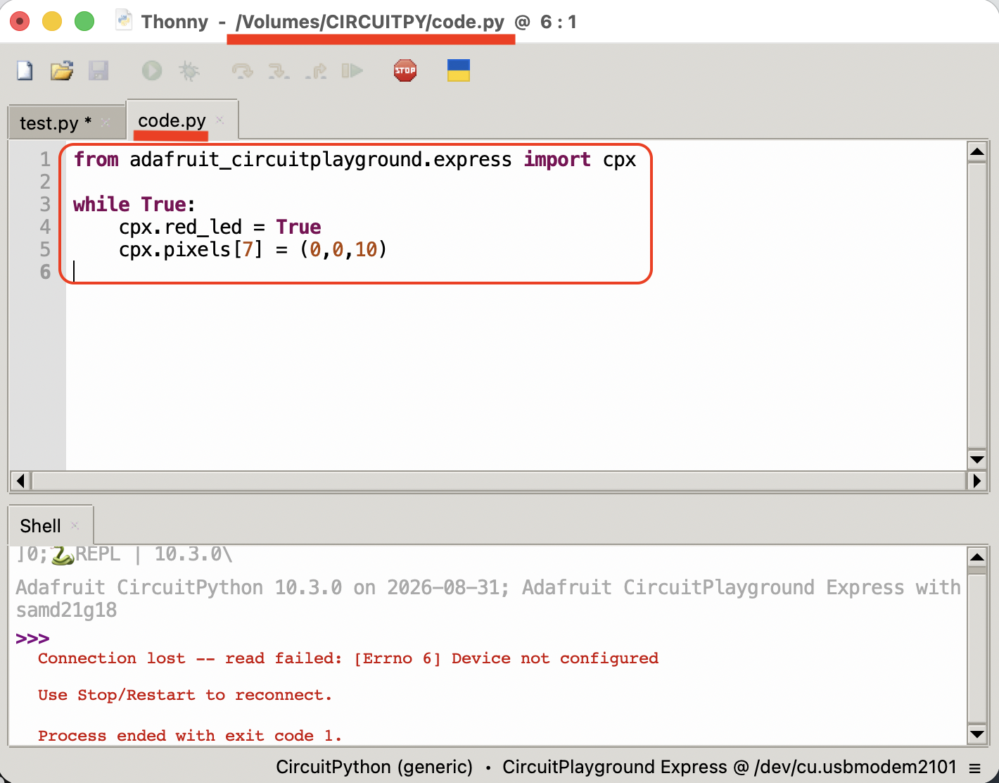
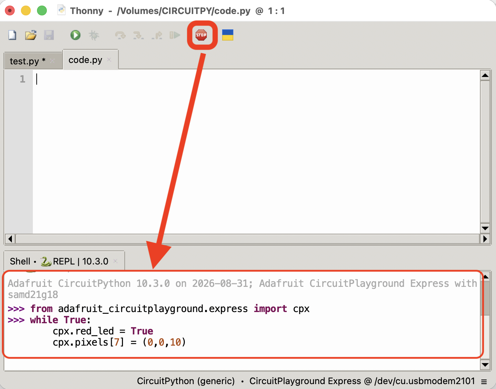

Lecture 01
E21 Computer Engineering Fundamentals
Introductions - Prof. Masroor
- Prof. Emad Masroor
- B.S. Mechanical Engineering, Cornell University 2017
- Ph.D. Engineering Mechanics, Virginia Tech 2023
- Thesis: Vortex Dynamics in the Laminar Wakes of Bluff Bodies
- Visiting Assistant Professor at Swarthmore College since Fall 2023
- Research interests broadly in Fluid Dynamics:
- theoretical studies of vortex dynamics
- experimental studies of wind-induced vibrations
- numerical studies of fish locomotion
Introductions - Prof. Masroor
- Outside of work, I …
- live in Philadelphia
- read about philosophy, history, science + enjoy literature
- take piano lessons
- travel (32/50 states) and take photographs
- hike & backpack, esp. Appalachian Trail
Introductions - Students
- Name, major, year
- Hometown
- What are your impressions of / expectations from E21?
- What is a topic/event/idea/person that you know a lot about?
Teaching Team
| Name | Role |
|---|---|
| Emad Masroor | Lec. Instructor |
| Matt Zucker | Lab. Instructor |
| Visnuk Rith | Wizard |
| Samchan Lee | Wizard |
| Uneeb Hyder | Wizard |
| Hiba Aby | Grader |
| Huyen Nguyen | Grader |
| Ellie Fermo | Grader |
| Kevin Sisk | Grader |
What is E21 about?


- Outside Swarthmore, ‘Computer Engineering’ is a part of ‘Electrical Engineering’
- A better definition for us: Engineering with computers
- Relevant for all types of engineers
- Make stuff do stuff
What is E21 about?

Logistics
See the website: https://emadmasroor.github.io/E21-F26
- Lectures Tue / Thu SCI 101, may be moved to SCI 199
- Labs Mon / Thu Singer 221
- No midterms, no final exam
- Six tests, ~ every two weeks starting week 4
- Final Project
| Use this for … | |
|---|---|
| Moodle | Submit HW, view scores |
| Gradescope | Manage and submit HW |
| Ed Discussion | Ask + Answer questions |
| Website | All Course Content |
Circuit Playground Express
• A versatile microcontroller for E21.
• The device is called ‘Circuit Playground Express’ (CPX)
• The software it runs is called Circuit Python

Bring to lecture and lab!
Installation Instructions
- Don’t download Python yet!
- Install Thonny Code Editor on your computer
- Download and install
Circuit Pythonon your Circuit Playground Express using instructions here.
- Download
.UF2file for CPX - Double-tap RESET button while CPX is plugged in
- Drag and drop
.UF2file ontoCPLAYBOOTdrive - If you now see
CIRCUITPYas an external drive instead ofCPLAYBOOT, you are done!


Integrated Development Environment (IDE)
- A ‘development environment’ is the program (or programs) you use to write code.
- It’s possible to simply use Notepad as your Development Environment, but that’s kinda lame
- Some options
- VS Code (v. popular among Swat students)
- A simple text editor with syntax highlighting (e.g. Sublime Text)
- Thonny, Mu, other ‘lightweight IDEs’
- IDLE (official Python IDE)
Two ways to run code on your board

code.py on board the file
- Once you’re sure what you want to code
- Thoughtful, long-form coding
- Runs if and when you save
code.py - Persistent
- Trying things out
- Instant feedback if works
- Runs when you hit enter
- No memory